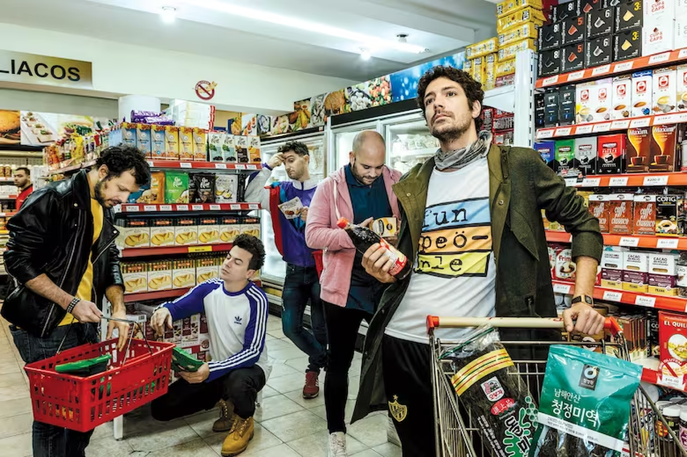

El Kuelgue es una banda argentina que se formó en 2004 en el barrio de Villa Crespo, Buenos Aires. Desde sus inicios, buscaron fusionar el rock con ritmos latinoamericanos como la bossa nova y el candombe, creando un concepto original y ecléctico en su música. Su estilo musical abarca géneros como el funk, el jazz, el candombe, el rock, la bossa nova, el tango y el reggae, a menudo entrelazados con freestyle, humor absurdo y teatralidad.
La improvisación desempeña un papel fundamental en la dinámica de El Kuelgue, permitiendo que sus influencias variadas, que van desde el funk hasta el folclore, se unan de manera única. La banda se ha convertido en una especie de obra de teatro ambulante, incorporando elementos teatrales y personajes en sus actuaciones en vivo, como el popular personaje Caro Pardíaco interpretado por Julián Kartun. Su capacidad para entretener al público, adaptándose a la mentalidad de la "generación zapping", ha contribuido a su éxito a lo largo de los años.
En casi dos décadas desde su formación, El Kuelgue ha desarrollado una identidad única en la escena musical argentina, caracterizada por su eclecticismo y su capacidad para combinar ritmos latinos, improvisación y canciones en un espectáculo en vivo cautivante.
